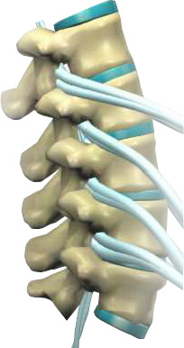

Subluxation
-
Shown here is a segment of your spine. The spinal cord passes along a passageway made up by your vertebrae. The spinal cord connects every cell, tissue and organ of your body to your brain through a pair of nerve roots that branch off from it. Millions of impulses flow continuously from the brain, along the spinal cord and out to every organ and tissue and back again, keeping a running monitor of how things are functioning. Nerves control all of your organs and tissues.
Facet JointsVertebral BoneNervesBulging Disc -
Subluxation means misalignment, a vertebral subluxation refers to a spinal bone which has become misaligned. Pressure applied to nerves because of a subluxation, can cause weakness, numbness and poor performance.
Likewise, if nerves are rubbed, stretched or otherwise irritated, they can develop hyperactive impulses that cause pain, muscle spasms, overactive organ function and other symptoms of poor health.
Subluxations can be caused by a slip & fall, an auto injury accident, effects of drug, alcohol, pollution and even emotional stress.
Degeneration
-

When your spine is continually neglected, you may enter various phases of subluxation degeneration. This progressively worsening condition is often the result of neglected spinal misalignment, injury, or misalignment. Because obvious symptoms are not always present, this condition can exist for years without detection.
-
Facet JointsVertebral BoneNervesBulging Disc
-
Degeneration of the spine can begin with an injury to the disc of the spine. Small Tears start forming in the Annulus or Disc Wall.
Sit of TearingAnnulus FibrosusNucleus Pulposes -
Osteophytes or Bone Spurs start to form as the tear tries to heal. The continued cycle of tearing and scarring cause the disc wall to weaken over time.
Sit of TearingAnnulus FibrosusNucleus Pulposes -
After some time, the disc becomes damaged and leaks material out of its Nucleus. This causes the disc to collapse.
-
Bones Spurs Continue to form, further limiting range of motion and nerve signal impulses to the rest of the body.
-
Degeneration severity is categorized by 4 phases.
Phase I
Phase II
Phase III
Phase IV
-
Seen in subluxations present up to 15 years.
Characterized by loss or change in normal curve in spine (lordotic curve).
Disc spaces have begun to exhibit slight changes in shape and buffer.
Overall motion probably not affected.
Chiropractic reconstructive care for phase 1 can take 6-12 months.
80 percent of people with phase 1 subluxation have no pain.
Therefore if left untreated phase 1 continues to progress with time until it eventually reaches phase 2.
-
Seen in subluxations present from 15-35 years.
Characterized by further loss of spinal curve.
Patients show reduction in range of motion.
Bone spurs begin to build up.
Disc spaces between the affected vertebrae are noticeably narrower and may appear to flatten.
Some people may not exhibit symptoms, some start to feel stiff or achy.
Chiropractic reconstructive care for patients in phase ranges from 1 to 2 years.
If left untreated, phase 2 subluxation slowly advances to the next phase.
-
Seen in subluxations present from 30-50 years.
Abnormal curvature.
Disc spaces are vastly decreased and changed.
Bone spurs are abundant.
Patients have restricted range of motion.
Chiropractic reconstructive care from 2 to 4 years.
If left untreated, phase 3 subluxation advances to the most serious phase.
-
Seen in subluxations present for more than 50 years.
Grave condition that negatively affects patients longevity and quality of life.
Severe structural changes.
Vertebrae exhibit massive bone spurs.
Disc buffers are very close.
Patients in phase 4 have serious structural and neurological problems, but chiropractic care can still help.
Many patients in phase 4 that seek chiropractic care, report improvements in mobility and quality of life.
-
It should be noted every patient is different. Degeneration and healing speeds vary with every patient, however the more time a subluxation has been left untreated, the longer the road to recovery will be. The time to see your chiropractor is today!